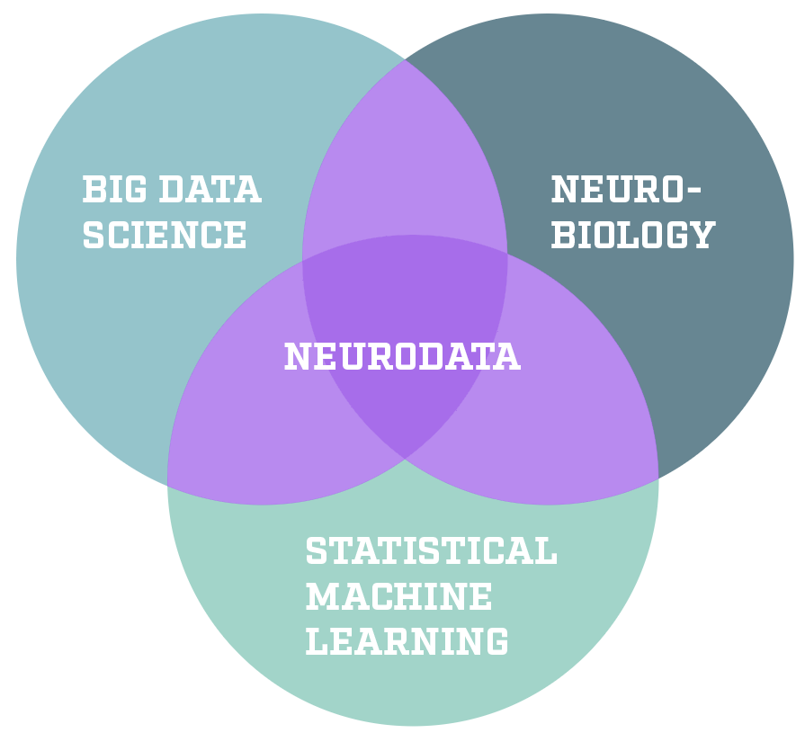
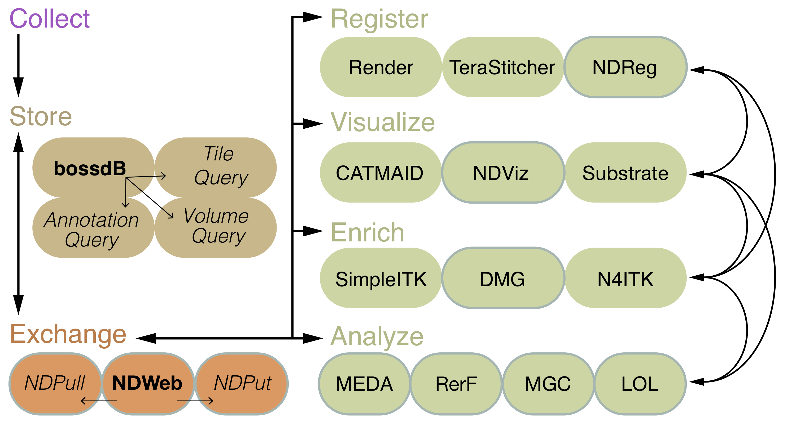

class: left, name:opening ## NeuroData Joshua T. Vogelstein & Vikram Chandrashekhar <br><br><br><br><br><br><br><br> <img src="images/biomedical-engineering.small.horizontal.white.png" STYLE="HEIGHT:95px;"/> <img src="images/funding/kndi_fpo.png" STYLE="HEIGHT:95px;"/> .foot[[jovo@jhu.edu](mailto:jovo at jhu dot edu) | <http://brainx.io/neuronex-stanford>] --- class: center ### <center>What is NeuroData?</center>  ### <center>Goal: Build tools that work on .r[your] data</center> --- ## Why is it hard? - classical statistic theory .r[requires]: - p dimensions is smaller than n samples - your data has .r[p >> n] - recent statistical theory for p >> n, - but with .r[inaccurate assumptions] for your data - those methods work poorly on your data - we develop methods that: - statistically valid - computationally efficient - for your data --- # Some Examples 1. Hypothesis Testing 2. Dimensionality Reduction 3. Classification 3. Connectome Coding 4. CLARITY & COLM For 1-3, we have strong theory that I can discuss ad nauseam --- ## Hypothesis Testing ##### Case A: Test whether X is independent of Y X is CLARITY brain, and Y is condition (eg, control vs. addicted) -- ##### Case B: Test whether population A is the same as population B Pop A are control CLARITY brains, Pop B are addicted CLARITY brains. <br> (this is akin to, and a generalization of, a t-test) -- #### Main Idea .r[MGC]: Compare "correlations" between all .r[local] pairs of points -- <br> ps - like Marr-Albus Sparse Expansion Theory -- <br> pps - can be used for "CCA", eg, behavior vs neural activity --- ### MGC Empirically Dominates <img src="images/FigHDPower.png" style="width: 100%;"/> --- ## Dimensionality Reduction Given pairs of high-dimensional X and corresponding class labels Y, find the best low-dimensional representation of X -- #### Main Idea .r[LOL]: Use the means and PCA of .r[each class separately] --- ### LOL Empirically Dominates <img src="images/LOL_real_data.png" style="width: 80%;"/> --- ## Classification Given pairs of high-dimensional X and corresponding class labels Y, find the best discriminant boundary -- #### Main Idea .r[RerF]: Find many good .r[sparse] projections of data --- ### RerF Empirically Dominates .pull-left[ - random forests (RF) were best - recent extensions improve - we are even better ] .pull-right[ <img src="images/error_histogram_benchmarks.png" style="width: 70%;"/> ] --- ## Connectome Coding <img src="images/connectome-coding.png" style="width: 100%;"/> Characterizing the relationship between the *past environment* and the *present neural connectivity* -- <br> (could be relevant for Callaway and Justus stuff?) --- ## CLARITY / COLM Build comprehensive ecosystem CLARITY/COLM data, including - storage & management - visualization - registration to atlas and one another - cell detection & counting - tractography --- ### Storage & Management  infinitely scalable in cloud --- ### Visualization .pull-left[ - Google's NeuroGlancer' - 3D pan, zoom, & rotate - Multi-channel overlays - Select individual ROIs - 30 minutes to load once ] .pull-right[ <img src="images/ndviz.png" style="width: 120%;"/> ] --- ### Registration <img src="images/ndreg.png" style="width: 100%;"/> - only ~1 hr per brain - fully automatic (no landmarks) - works on iDisco and other species too --- ### Cell Detection <img src="images/bloby.png" style="width: 100%;"/> --- ### Cell Detection Analysis <img src="images/regioncounts2.png"/> --- ### Tractography <img src="images/ndtract.png" style="width: 100%;"/> --- class: middle # <center>[demo](https://tinyurl.com/yco8h787)</center> --- class: top, left ## Acknowledgements <div class="container"> <img src="faces/cep.png"/> <div class="centered">Carey Priebe</div> </div> <div class="container"> <img src="faces/randal.jpg"/> <div class="centered">Randal Burns</div> </div> <div class="container"> <img src="faces/mim.jpg"/> <div class="centered">Michael Miller</div> </div> <div class="container"> <img src="faces/bcaffo.jpg"/> <div class="centered">Brian Caffo</div> </div> <div class="container"> <img src="faces/milham.jpg"/> <div class="centered">Michael Milham</div> </div> <div class="container"> <img src="faces/dtward.jpg"/> <div class="centered">Daniel Tward</div> </div> <div class="container"> <img src="faces/minh.jpg"/> <div class="centered">Minh Tang</div> </div> <div class="container"> <img src="faces/cshen.jpg"/> <div class="centered">Cencheng Shen</div> </div> <div class="container"> <img src="faces/gkiar.jpg"/> <div class="centered">Greg Kiar</div> </div> <div class="container"> <img src="faces/ebridge.jpg"/> <div class="centered">Eric Bridgeford</div> </div> <div class="container"> <img src="faces/vikram.jpg"/> <div class="centered">Vikram Chandrashekhar</div> </div> <div class="container"> <img src="faces/tyler.jpg"/> <div class="centered">Tyler Tomita</div> </div> <div class="container"> <img src="faces/james.jpg"/> <div class="centered">James Brown</div> </div> <div class="container"> <img src="faces/falk_ben.jpg"/> <div class="centered">Benjamin Falk</div> </div> <div class="container"> <img src="faces/kwame.jpg"/> <div class="centered">Kwame Kutten</div> </div> <div class="container"> <img src="faces/perlman.jpg"/> <div class="centered">Eric Perlman</div> </div> <br><br> <img src="images/funding/nsf_fpo.png" STYLE="HEIGHT:95px;"/> <img src="images/funding/nih_fpo.png" STYLE="HEIGHT:95px;"/> <img src="images/funding/darpa_fpo.png" STYLE=" HEIGHT:95px;"/> <img src="images/funding/iarpa_fpo.jpg" STYLE="HEIGHT:95px;"/> <img src="images/funding/kavli_fpo.png" STYLE="HEIGHT:95px;"/> <img src="images/funding/schmidt.jpg" STYLE="HEIGHT:95px;"/> --- ### Questions? Now hiring! .pull-left[ | task | link | | --- | --- | | testing | [MGC](https://github.com/neurodata/mgc) | | dim red | [LOL](https://github.com/neurodata/LOL) | | classify | [RerF](https://github.com/neurodata/R-RerF/) | | conn code | [GraphStats](https://github.com/neurodata/graphstats/) | CLARITY | [COBALT](https://github.com/neurodata/COBALT) | | email | [jovo@jhu.edu](mailto:jovo@jhu.edu) | | web | [neurodata.io](http://neurodata.io/) | | startup | [gigantum.com](http://gigantum.com/) | <span style="font-size:200%; color:red;">♥, 🦁, 👪, 🌎, 🌌</span> ] <br> <img src="images/liono.JPG" STYLE="position:absolute; TOP:110px; LEFT:480px; HEIGHT:500px;"/> <!-- background-image: url("images/OCPaper.png") background-size: contain; --> <!-- <img src="images/OCPaper.png" style="width: 100%;"/> -->